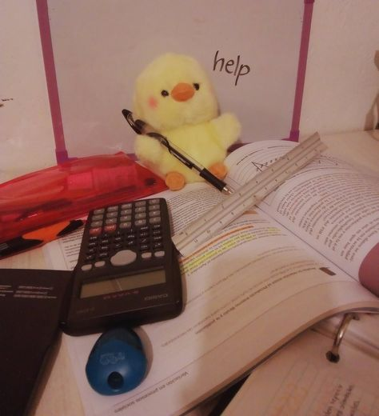

Tydzien 1
ptzydatny link sciezka rozwojuno i pod koniec byla pierwsza zabawa z zmienianiem tresci na srtonie internetowej)

Spontanicznie,w ostatniej chwili moj brat zaproponolal mi uczestniczyc w kursie z frontendu i najpierw mialam takie wtf)) ale pozniej ten pomysl mi sie strasznie spodobal sie